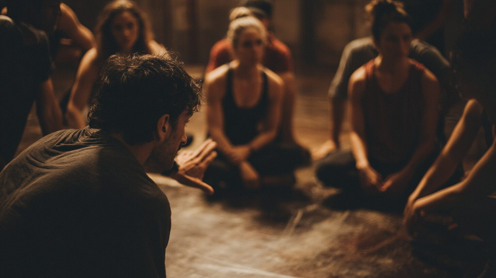

Forestil dig at du ser ud af fire forskellige vinduer i det samme rum. Hvert vindue viser en del af virkeligheden — men ingen af dem viser det hele. Det er idéen bag kvadranterne.
Ken Wilber observerede noget grundlæggende: alle menneskelige erfaringer kan ses fra fire perspektiver. Der er det indre og det ydre. Og der er individet og fællesskabet. Kryds de to akser, og du får fire kvadranter — fire fundamentale måder at forstå ethvert fænomen på.
Øverste venstre — "Jeg" handler om dit indre landskab. Dine tanker, følelser, intentioner, drømme. Det rum kun du har adgang til. Når du mærker en knude i maven før et svært møde, er det her du befinder dig.
Øverste højre — "Det" er det ydre og målbare ved dig. Din adfærd, dine handlinger, din krop. Det andre kan se og måle. Pulsen der stiger, hænderne der ryster, stemmen der bærer eller knækker.
Nederste venstre — "Vi" er det usynlige lim i fællesskabet. Kultur, fælles værdier, normer, sprog. Den tillid — eller mistillid — der lever mellem mennesker i et team, en familie, en organisation.
Nederste højre — "Det/Dem" er de synlige systemer og strukturer. Organisationer, love, teknologi, budgetter, processer. De rammer vi bevæger os inden for.
De fleste organisationer fokuserer næsten udelukkende på de to højre kvadranter: adfærd og systemer. Vi laver nye processer, omstrukturerer, sætter KPI'er. Men kulturen (nederste venstre) og den indre motivation (øverste venstre) ændrer sig ikke af sig selv. Derfor dør så mange forandringsprojekter stille hen.
Lai Ydes metode er integral, fordi den arbejder med alle fire kvadranter samtidig. Gennem skuespilteknikker træner du det indre landskab — selvbevidsthed, ærlighed, mod. Gennem kroppen træner du det ydre udtryk — stemme, tilstedeværelse, handling. Og i fællesskabet — BuddhiCamp, mandegrupper, workshops — opbygges den kultur og de strukturer, der gør forandringen holdbar.
Her er to øvelser du kan prøve — alene eller i en gruppe. De kræver ingen forkundskaber, kun viljen til at være ærlig.
En journaling-øvelse der hjælper dig med at se en udfordring fra alle fire perspektiver. Brug den næste gang du står over for en beslutning eller en konflikt.
En kropslig øvelse inspireret af teateret. Stil fire stole op i rummet — én for hver kvadrant. Du bevæger dig fysisk mellem dem og taler fra hvert perspektiv.
AQAL-modellens fem dimensioner hænger sammen. Dyk ned i dem alle for at få det fulde billede.
Fire perspektiver
Bevidsthedens spiral
Mange intelligenser
Bevidsthed i bevægelse
Personlighedsmønstre
Integral Teori er bedst når den opleves — ikke bare læses. Book en samtale med Lai eller deltag i næste BuddhiCamp på Agersø.
Bliv en del af fællesskabet